COLA
Composite Optimization & Logistics Automation
Agentic AI workflow for UConn Formula SAE, 2026–present
An automated ANSYS Workbench and ACP workflow for composite layups, built by AI agents from my idea and my initial AIP study. Its predictions land within 1% of our lab punch-shear tests on the anti-intrusion plate samples.
- 0.6%largest gap between predicted and measured first-peak load
- 250% → <1%model error, from the first lab comparison to now
- 12 layupsset up, solved and ranked in 11 minutes for a punch-test sweep
- Type
- Agentic AI workflow
- Built with
- Claude and Gemini
- Status
- Internal tool; not public
- Tools
- Python, ANSYS Workbench and ACP (UConn student license), agentic AI
Overview
COLA is an automated ANSYS Workbench and ACP workflow that sets up, solves and ranks composite layups against the FSAE rules. I conceived it from my manual anti-intrusion plate study and own its engineering: what it has to predict, the FSAE rule logic it checks, the material data it runs on, and its validation against our Instron tests.
I built it as an agentic AI workflow. Gemini and Claude wrote the Python under my direction, and I calibrated the material models against physical test data until the model error dropped from 250% to under 1%.
Objective and constraints
Predict physical test results accurately enough that the team can skip tests it can't easily run. Accuracy is the whole point. We have limited access to the Instron machine, and the 3-point bend test a composite anti-intrusion plate needs has to be outsourced because the machines at UConn can't run it. Every test COLA can predict reliably saves time and money.
| Constraint | Limit |
|---|---|
| Accuracy | Predictions must match lab tests of the same layups before the team relies on them |
| Test access | Limited Instron time; 3-point bend testing must be outsourced |
| Materials | Must use the team's real fabrics and core: 13 XML material files, corrected with ply thicknesses and weights measured on our own samples |
| Software | ANSYS Workbench and ACP on a UConn student license |
| Run time | Coupon sweeps take 11 minutes (12 punch-test layups) to about an hour (12 three-point bend layups) on my workstation; bigger parts can go to the UConn HPC cluster |
My role
What I did
- Came up with the idea for COLA.
- Ran the initial anti-intrusion plate study in ANSYS ACP that the workflow is based on.
- Directed Claude and Gemini through building and refining the workflow.
- Supplied the engineering data: part geometry, material properties and our lab test results.
- Validated every result against physical tests and fed the gaps back in.
What the AI did
- Gemini wrote the code, Claude found and fixed the errors, and Gemini checked it again. They went back and forth like that until it worked.
- They turned my manual ACP steps into a repeatable, scripted workflow.
Process and technical details
How the workflow runs
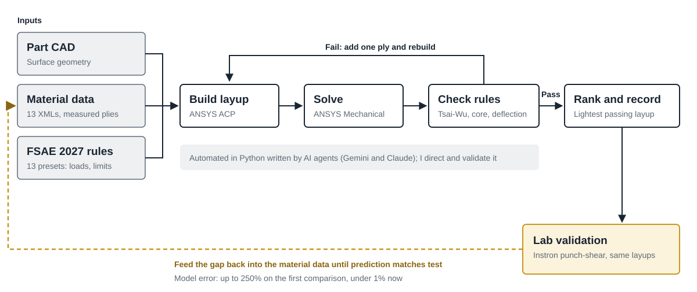
Everything starts from one launcher, RUN_PIPELINE.bat, which runs run_pipeline.py and drives ANSYS Workbench in the background.
- Match the part to the rules. COLA reads the CAD file name and picks one of 13 FSAE 2027 rule presets, such as the anti-intrusion plate, aero wing, side impact panel or punch-test coupon. The preset sets the loads, deflection limits and safety factors.
- Load the materials. Properties come from 13 XML material definitions, with ply thicknesses and areal weights replaced by values measured on our own wet-layup samples.
- Build the sweep. For every listed fabric, as a solid laminate and as a Nomex honeycomb sandwich, COLA starts at the minimum ply count and adds one ply at a time until the layup passes.
- Solve. Each layup is built in ACP and solved in ANSYS Mechanical with no one clicking through it.
- Check, iterate and rank. Each result is checked against the preset's FSAE criteria: deflection, Tsai-Wu safety factor on the skins, and crush and shear on the core. Passing layups are ranked lightest first, using the team's resin and part-weight calculator, and the run writes contour plots, trade-off charts and a recommended layup.
Getting closer to the lab
Instead of trading accuracy for speed, I keep pushing COLA toward the real test data. The first comparison with our lab tests was off by as much as 250% because of modeling errors. Every time I gave it more information about how our parts are actually built, its predictions got closer, until the error was within 1%.
- Measured inputs: cured ply thicknesses and weights from calipers and scales on our samples, and the real 0.19 in Nomex core.
- One calibrated value: the core's effective crush strength includes our adhesive bond lines, so no data sheet has it. COLA found the single value, 3.95 MPa, that reproduces both sandwich punch tests at once. One value matching two different layups is what gives me confidence in the model beyond those two tests.
- Honest gaps: core shear strengths are still data-sheet values. A physical 3-point bend test would check them, and none has been run yet.
Working with AI agents
The two models worked in a feedback loop. Gemini wrote the first version of the code, then Claude reviewed it, found errors and fixed them. Gemini checked Claude's changes, and they kept passing the code back and forth until it ran correctly. My job through all of it was the engineering: deciding what COLA needed to predict, supplying real data, and judging whether each result made physical sense against the tests.
Gallery
Select any image to see it full size. Use the arrow keys to move between images.
Models
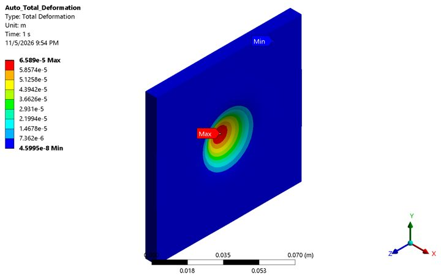
Punch-test coupon model: 100 × 100 mm, 25 mm punch, 32 mm support hole. 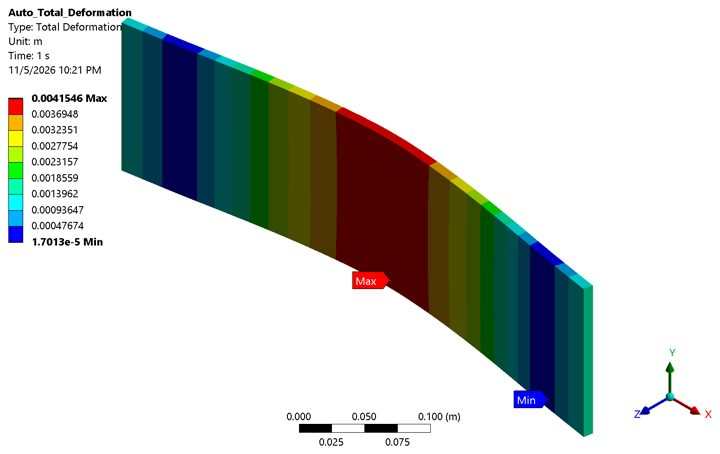
Three-point bend coupon model, twill sandwich. 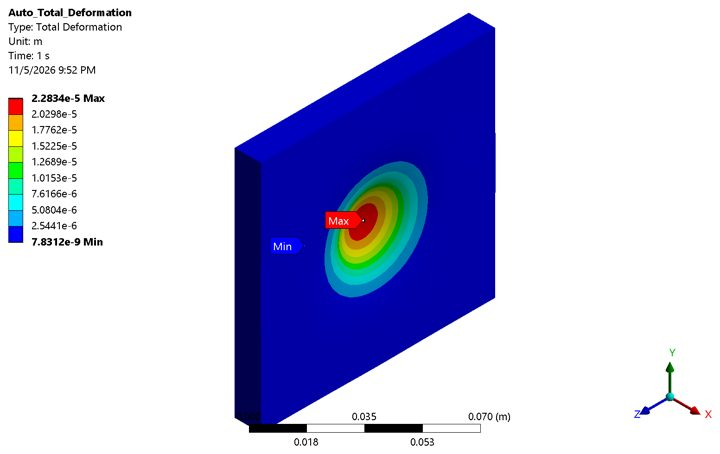
Satin sandwich coupon under the punch.


Analysis
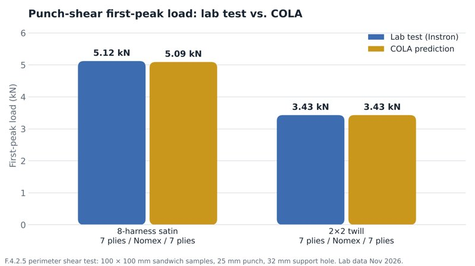
Lab against COLA: 5.12 vs 5.09 kN (satin) and 3.43 vs 3.43 kN (twill). 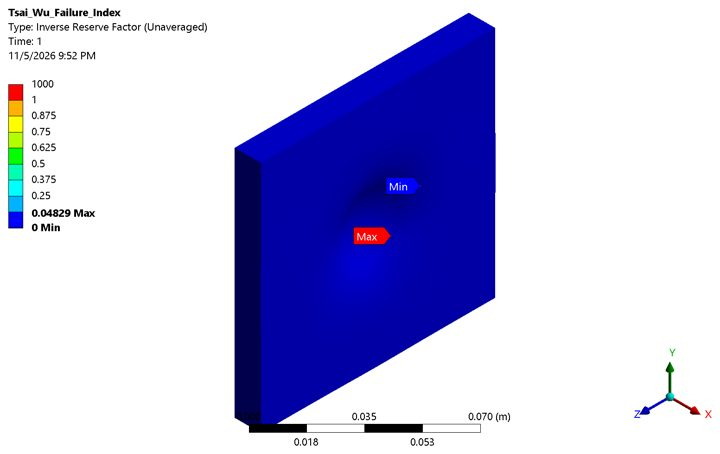
Tsai-Wu failure index, satin sandwich. 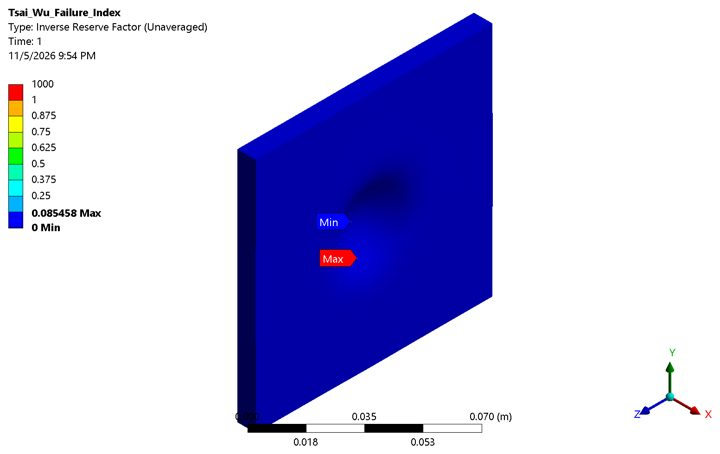
Tsai-Wu failure index, twill sandwich. 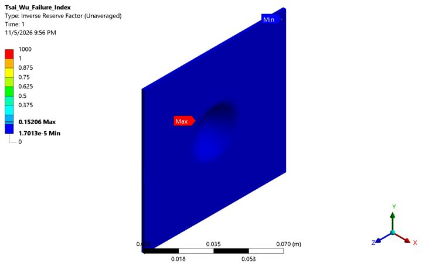
Tsai-Wu failure index, 6-ply solid triaxial. 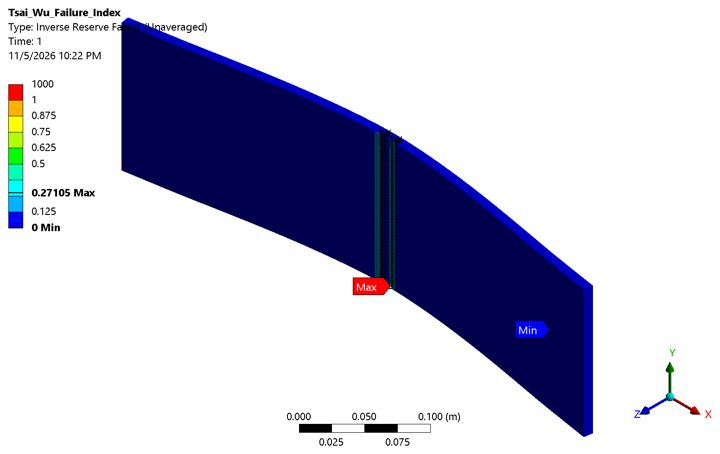
Tsai-Wu failure index, 3-point bend coupon. 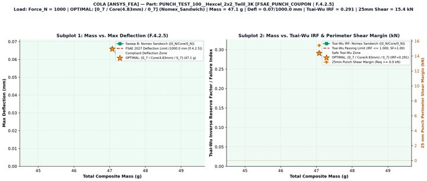
Trade-off chart COLA writes for every run: mass against deflection and failure index. 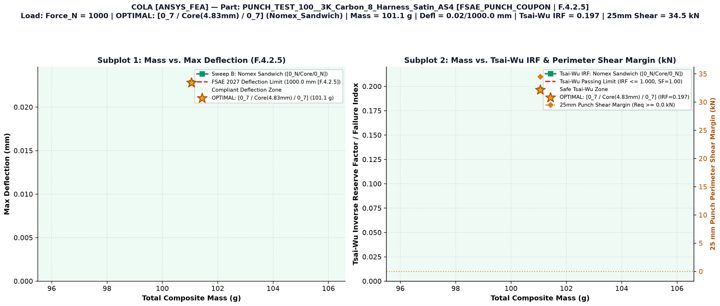
Trade-off chart, satin punch coupon. 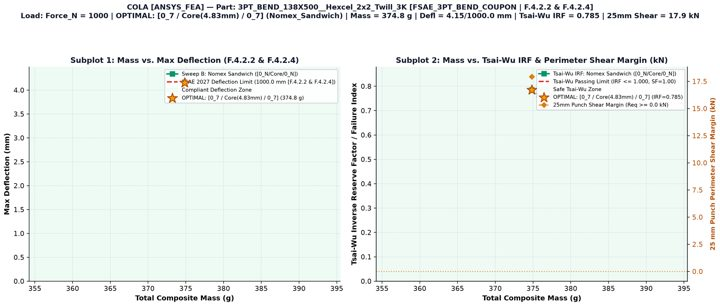
Trade-off chart, 3-point bend coupon.


Lab validation
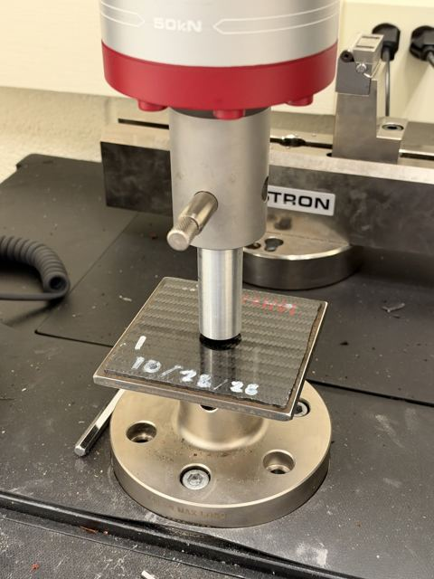
The lab test COLA is checked against: F.4.2.5 punch-shear on an Instron. 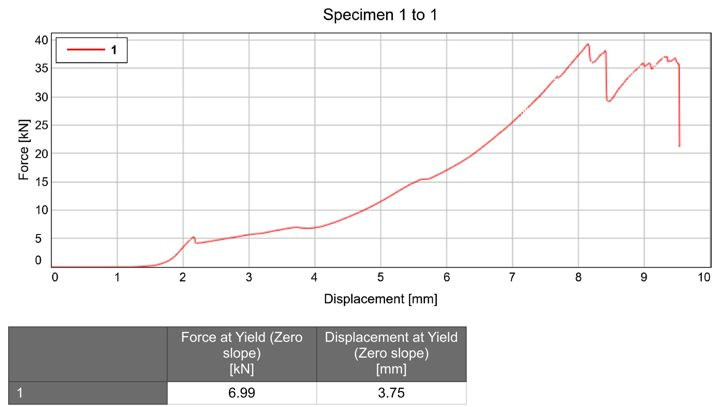
Instron curve, satin sample 3: first peak near 5 kN. 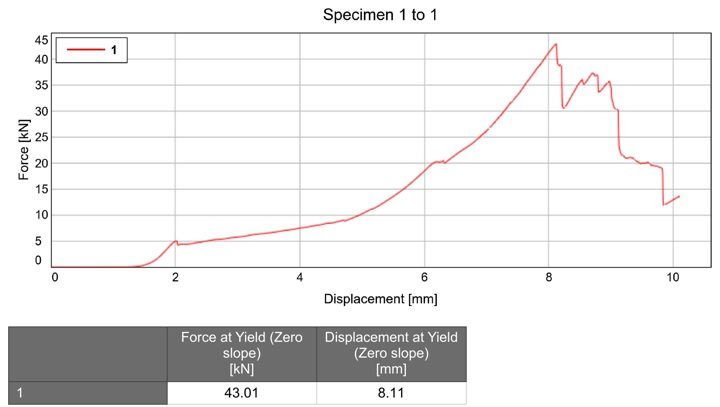
Instron curve, satin sample 4: maximum about 43 kN. 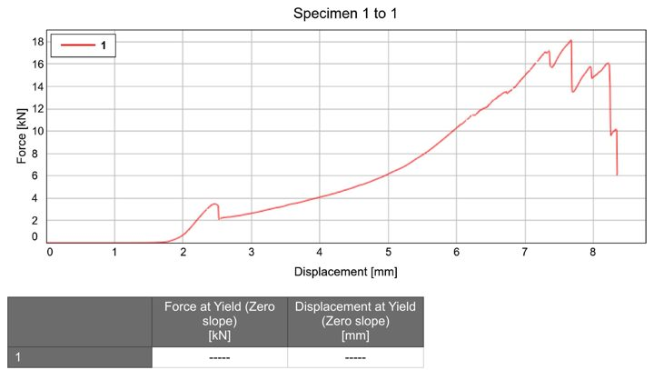
Instron curve, twill sample 5: first peak near 3.4 kN. 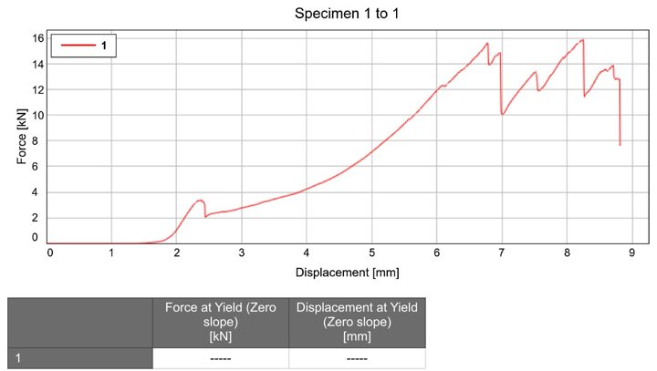
Instron curve, twill sample 6. 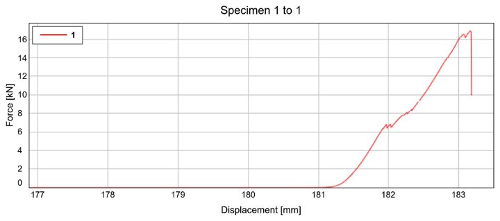
Instron curve, solid triaxial sample 1. 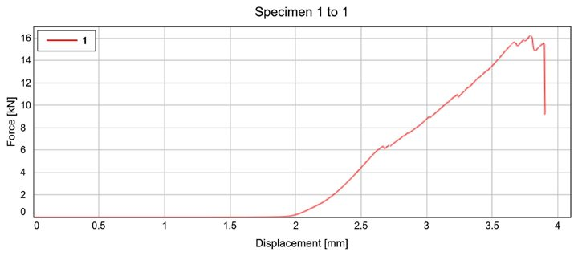
Instron curve, solid triaxial sample 2.


Results and impact
| Sample (F.4.2.5 punch test) | Lab first peak | COLA prediction | Difference |
|---|---|---|---|
| 8-harness satin, 7 / Nomex / 7 | 5.12 kN | 5.09 kN | 0.6% |
| 2×2 twill, 7 / Nomex / 7 | 3.43 kN | 3.43 kN | 0% |
- Matches the lab today: COLA reproduces our physical punch-shear results on the anti-intrusion plate samples. Model error went from up to 250% on the first test to under 1%.
- Fast: a 12-layup punch-test sweep runs in 11 minutes, and a 12-layup 3-point bend sweep in about an hour, on my workstation.
- Impact: with a validated model, the team can predict results before spending scarce Instron time or paying for outsourced tests.
What's next
Simulating the anti-intrusion plate's 3-point bend test showed the design would not meet the requirement, so the composite plate is on hold. Next is more materials testing to give COLA better data, so its bend predictions can be trusted before paying for an outsourced test. After that, the aero wing. COLA is an internal team tool, and I'm not planning to release it publicly.